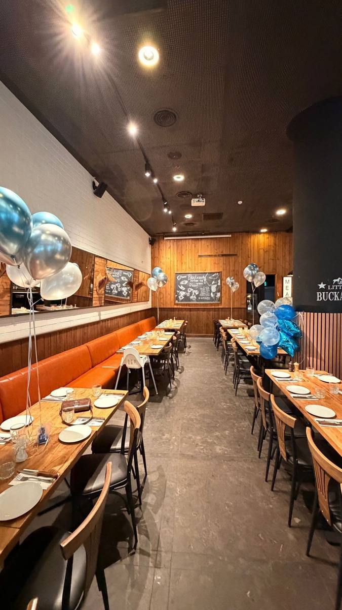
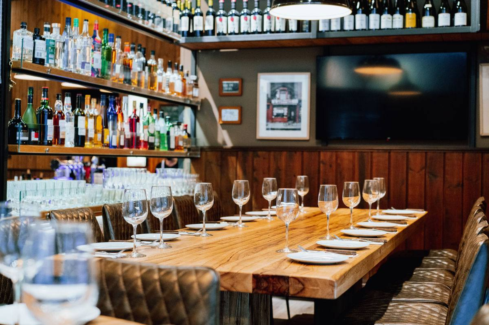
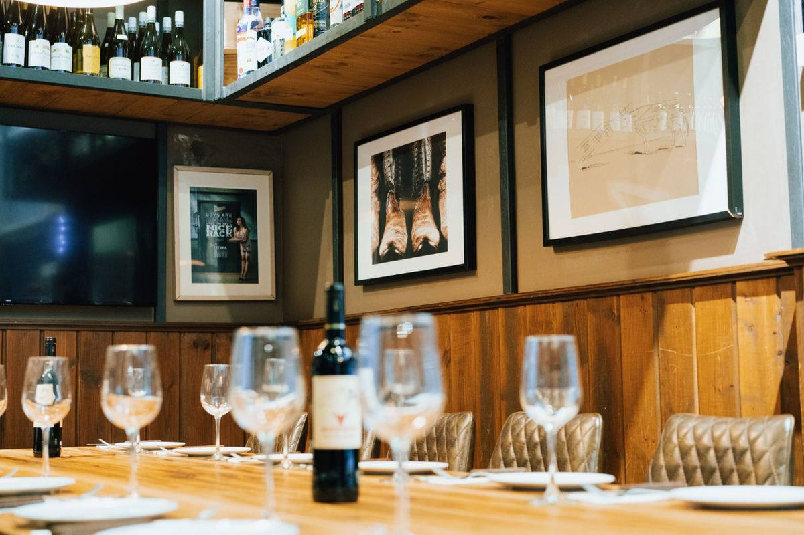
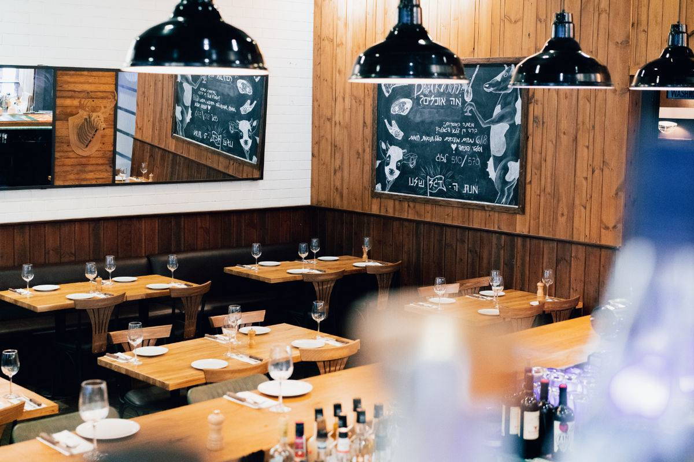
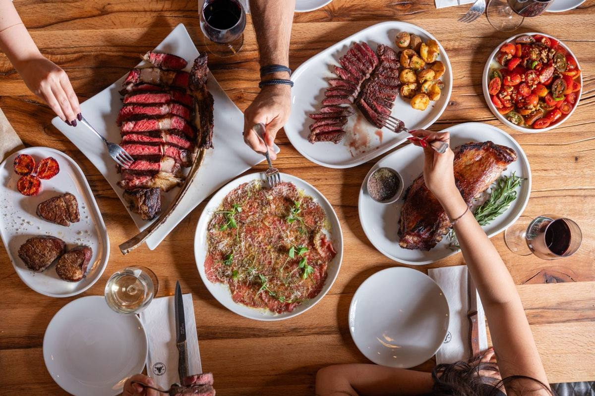
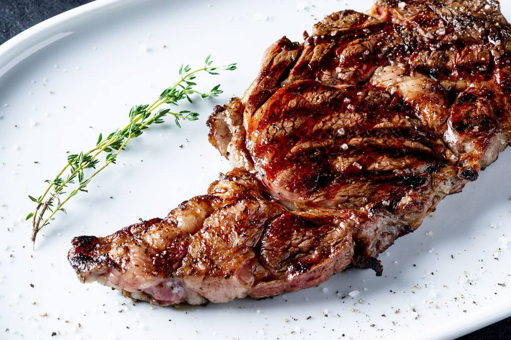
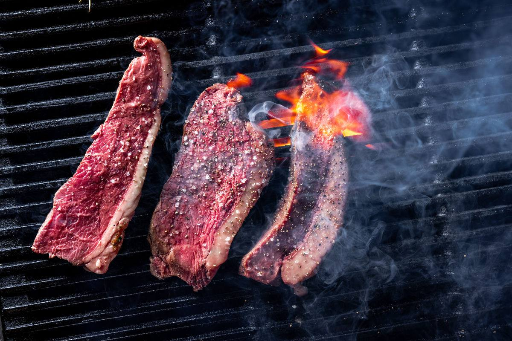
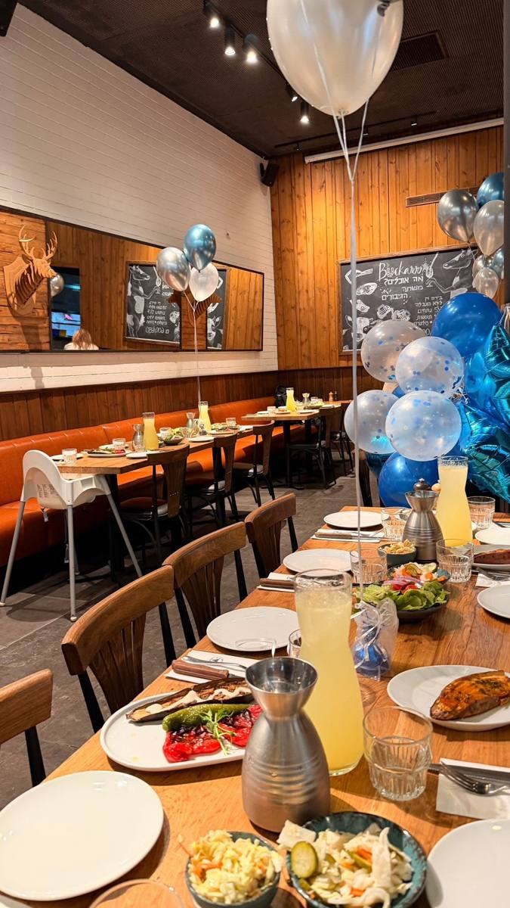

4 מקומות · עודכן 24.10.2026 · לחצו על שם מקום לכל הפרטים והתמונות
לא כלול באף מקום: עיצוב ופרחים, צלם או עמדת מגנטים, שדרוגי אוכל ושתייה, הארכת האירוע, סגירת המקום כולו.
| קופינאסצור משה | באקרורעננה | שנקיןרעננה | אהרונהביתן אהרון | |
|---|---|---|---|---|
| סה"כ משוער | כ-19,020 ₪ 317 ₪ לאורח · שישי בצהריים שבת בצהריים: כ-20,070 ₪ מספר השולחנות הוא הערכה מהתמונות לא מאומת אקו"ם לא כלול, הסכום חסר מקור: חישוב שלנו לפי הצעות המחיר | כ-23,333 ₪ 389 ₪ לאורח · שישי או שבת בצהריים סגירת כל המסעדה לא כלולה: משלמים לפי 88 סועדים בצהריים (אלי, 19.10) מקור: חישוב שלנו לפי הצעות המחיר | כ-25,901 ₪ 432 ₪ לאורח · שישי בצהריים המחירים של שנקין לא כוללים מע"מ מבוגר מעבר ל-40: 260 ₪ (פגישה 23.10) מלצר לכל 12 אורחים וברמן לכל 50 (בהצעה ל-60: 5 מלצרים ו-2 ברמנים) הצעה בכתב מהמקום (23.10): 26,609 ₪ כולל מע"מ ל-40 מבוגרים + 20 ילדים, כולל קומת ילדים (2,500), עיצוב (800) וקוקטייל בבר מקור: חישוב שלנו לפי הצעות המחיר | כ-22,180 ₪ 370 ₪ לאורח · שישי בצהריים מנת ילדים במחיר מוזל רק מ-70 מבוגרים ו-15 ילדים; עד 15 מנות שניצל לילדים בלי תוספת (יונה, 19.10) יין ובירה מופיעים בתפריט הכללי, לא בהצעה לא מאומת מקור: חישוב שלנו לפי הצעות המחיר |
| ראשונות / מזנונים | 8 4 בקבלת הפנים (ארנצ'יני, 2 פוקצ'ות, עלי גפן) ו-4 למרכז השולחן (סלק, חציל, לביבות כרישה, פלפלים), ועוד פוקצ'ת הבית | 4 חציל, פלפלים, בטטות, חמוצים, ועוד פוקאצ'ה עם סלסה וטחינה; הכל למרכז השולחן | 8 3 מנות קבלת פנים לבחירה מתוך 9, ובמזנון המעדנייה 5 ירקות קלויים, ועוד לחמים ומטבלים | 4 לבחירה מתוך 16 מזנונים, ועוד לחמי הבית ומטבלים לא מאומת (בתפריט הכללי, לא בהצעה) |
| עיקריות | 4 2 פסטות, פרגית עם תפוחי אדמה, סלמון עם שעועית; הכל לכל השולחן | 5 טעימות בשרים למרכז השולחן: פרגית, בריסקט, פיקניה, אסאדו, צ'וריסוס טלה, ועוד 2 תוספות חמות; לצמחונים 4 מנות אחרות | 3 אחת מכל סוג: בשר, עוף ודג (3 לבחירה מכל סוג), כל אחת עם תוספת | 3 לבחירה מתוך 10, ועוד 3 תוספות חמות לא מאומת (בתפריט הכללי, לא בהצעה) |
| סלטים | 4 קוסקוס (בקבלת הפנים), כרובית, רומנו, עדשים | 2 סלט שוק, קולסלאו | 3 ירוקים, כרוב אסייתי, טאבולה | 4 לבחירה מתוך 10 בבר הסלטים |
| קינוחים | 3 בופה עוגות של אוונטאז', 3 סוגים משתנים, ועוד פירות העונה מקור: הצעת קופינאס (נעמה, 16.10); אותו תפריט גם בשבת | 5 מוס שוקולד, קרם עוגת גבינה, מוס נוטלה, 2 סורבה מקור: תפריט האירועים 2027 | 8 עמדה מסתובבת: צ'ורוס, קראמבל תפוחים, פאני פורי גלידה, ועוד 5 קינוחי ביס מקור: תפריט השף 2026, 280 ₪ למבוגר; זה התפריט בהצעה מ-23.10 | 2 הפטיסרי הצרפתי ועוד אחד לבחירה: וופל, סופלה, מלבי או פירות מקור: הצעת יונה (19.10) ותפריט אהרונה |
מהזול ליקר: 1. קופינאס · 2. אהרונה · 3. באקרו · 4. שנקין.
מה מקבלים בבסיס, בלי שדרוגים: כמה מנות מכל סוג כלולות במחיר הבסיס, לפי ההצעה או התפריט של המקום. לחם ומטבלים לא נספרים, רק מצוינים. "לבחירה מתוך" = בוחרים מראש מהרשימה של המקום.
כל שורה בטבלה היא אחד מהנושאים האלה. כל המחירים לשישי בצהריים או לשבת; מחירי אמצע שבוע לא מוצגים. מחירים כוללים מע"מ אלא אם כתוב אחרת. מקום כשר לא מקיים אירועים בשבת. כשיש סתירה, מה שהמקום עצמו כתב לנו גובר על מה שכתוב באתרים.
| נושא | קופינאסצור משה | באקרורעננה | שנקיןרעננה | אהרונהביתן אהרון |
|---|---|---|---|---|
| כמה נושאים חסרים (מתוך 14) | 1 | 0 | 0 | 1 |
| מחיר למבוגר | שישי בצהריים: 265 ₪ כולל מע"מ · שבת בצהריים: 285 ₪ מקור: הצעת המחיר · הצעת שבת בצהריים | שישי או שבת: 345 ₪ כולל מע"מ, אותו מחיר בשני הימים · שבת בערב: אם אין עומס, הנחה של 15–20 ₪ לסועד (אלי לנעמה, 19.10) מקור: תפריט האירועים 2027 · אלי לנעמה, 19.10 (וואטסאפ והודעה קולית) | שישי בצהריים: 280 ₪ + מע"מ (≈330 ₪ כולל) · כל מבוגר מעבר ל-40: 260 ₪ (פגישה 23.10); כתוב גם בהצעה (הצעת מחיר 23.10) · שבת: אין, המקום כשר מקור: הצעת המחיר בכתב, 23.10 · פגישה במקום, 23.10 (הקלטה) · התפריט והמחירון 2026 | שישי בצהריים: 290 ₪ כולל מע"מ, לאירוע של 50 ומעלה (בהצעה: 265 ₪ ועוד 25 ₪ לשישי) (הצעת יונה, 19.10) · שבת: אין, המקום כשר מקור: הצעת המחיר של יונה, 19.10 |
| מחיר לילד | ילד 3–10: 115 ₪ בשישי, 120 ₪ בשבת · נער 11–17: 240 ₪ בשישי, 250 ₪ בשבת מקור: הצעת המחיר · הצעת שבת בצהריים | 150 ₪ עד גיל 10 (נקניקיות או שניצלונים עם צ'יפס) (המקום לנעמה, 17.10) · מעל גיל 10 = מבוגר (345) מקור: תפריט האירועים 2027 · תשובות המקום לנעמה, 17.10 | 140 ₪ + מע"מ, גילאי 3–13 כולל — חברים של איתי בני 13 = מחיר ילד · ילדים אוכלים מכל האוכל, "אין הפרדה באוכל… רק במחיר" (פגישה 23.10) מקור: פגישה במקום, 23.10 (הקלטה) · התפריט והמחירון 2026 | ילד = מגיל 3 עד גיל בר/בת מצווה. מנת ילדים רק מ-70 מבוגרים משלמים ו-15 ילדים לפחות: בשישי 205 ₪ + 15% שירות; המבורגר, שניצל וצ'יפס בעמדות, ושותפים רק לשתייה ולקינוחים · לנו (50 + 10) זה לא חל: הילדים משלמים מחיר מלא, ואפשר לקבל עד 15 מנות שניצל וצ'יפס בהגשה אישית בלי תוספת (הצעת יונה, 19.10) מקור: הצעת המחיר של יונה, 19.10 |
| כולל אלכוהול | כן: קאווה איבריקה, מרלו רזרב ושרדונה (ברקן), גולדסטאר מהחבית מקור: הצעת המחיר | כן: 2 יינות אדומים, 2 לבנים, קאווה, 2 בירות (מלכה, נגב) ו-3 קוקטיילים (המקום לנעמה, 17.10) מקור: תפריט האירועים 2027 · תשובות המקום לנעמה, 17.10 | בר שתייה: משקאות קלים, מוגזים, בירה, יין, יין מבעבע · בר קפה: אספרסו, הפוך, חליטות תה · פטיפורים — הכל 0 ₪, כלול (הצעת מחיר 23.10); "מגיע תמיד" (פגישה 23.10) · קוקטייל בבר על חשבון הבית (הצעת מחיר 23.10) · לפי המחירון: בירה קורונה וגולדסטאר, יין יקב בן דוד · וויסקי או קוקטיילים: להביא בעצמנו או להזמין דרך המקום (פגישה 23.10) מקור: הצעת המחיר בכתב, 23.10 · פגישה במקום, 23.10 (הקלטה) · התפריט והמחירון 2026 | בתפריט הכללי: יין אדום ולבן, בירה קלרסברג מהחבית, שתייה קלה (תפריט אהרונה) · בהצעה לא כתוב שהם כלולים במחיר לא מאומת מקור: התפריט הכללי 2025 |
| תוספת לאלכוהול | סנגריה/לימונערק +15 ₪ · שדרוג בר (ערק, קמפרי, ג'ין) +20 ₪ · שדרוג יינות +20 ₪ — למבוגר מקור: הצעת המחיר | חבילת קוקטיילים (מוחיטו, וויסקי תפוחים, אפרול, מידורי) +35 ₪ למבוגר מקור: תפריט האירועים 2027 | בר אלכוהול משודרג חופשי 40 ₪/אדם · עמדת קוקטיילים (עד 60) 2,500 ₪ · קוקטייל בבר 800 ₪ (+מע"מ) · אפשר גם להביא אלכוהול בעצמנו (פגישה 23.10) מקור: פגישה במקום, 23.10 (הקלטה) · התפריט והמחירון 2026 | עמדת אלכוהול (וודקה, וויסקי, ערק, קוקטייל) +40 ₪ לאדם · אלכוהול מבחוץ: דמי חליצה 500 ₪ (הצעת יונה, 19.10) · אתר מדריך (ריזרב) כותב שאי אפשר להביא אלכוהול — ההצעה של יונה חדשה יותר וגוברת מקור: הצעת המחיר של יונה, 19.10 · אתרי מדריך לאירועים, נבדק 19.10 |
| מינימום אורחים | שישי ושבת: 60 אורחים מתוכם 50 מבוגרים, מקסימום 80 מקור: הצעת המחיר | 50 לכל היותר — לנעמה נאמר ש-50 עד 70 זה בסדר (רועי, 17.10; גם בהקלטה [06:00]) · אתר: אירועים מ-10 עד 135 · לסגירת כל המסעדה: מ-88 סועדים, ומתחת לזה משלמים לפי 88 בשבת בצהריים או לפי 82 בשבת בערב (אלי, 19.10) מקור: רועי בביקור, 17.10 · ביקור במקום, 17.10 (הקלטה) · אלי לנעמה, 19.10 (וואטסאפ והודעה קולית) | 40 מבוגרים + 20 ילדים — המקום הציע להתחייב על זה ולהעלות בהמשך: "הצעת מחיר זה התחייבות" (פגישה 23.10); כלומר ילדים נספרים במינימום · אתר: 60–150 מקור: פגישה במקום, 23.10 (הקלטה) · אתר המקום | 50 ("תפריט כללי ל-50 איש ומעלה") (הצעת יונה, 19.10) · אתר: מ-15 מקור: הצעת המחיר של יונה, 19.10 · אתר המקום |
| אפשרי בשבת | כן — הצעה נפרדת לשבת בצהריים (285 ₪); המסעדה פועלת בשבת מקור: הצעת שבת בצהריים | כן — "ניתן לקיים אירועים בשישי ושבת" (אתר); ביקורות על בר מצווה בשבת בצהריים (60, 80, 120 אורחים) · שישי ושבת באותו מחיר (אלי, 19.10) · שבתות פנויות בדצמבר–ינואר (נכון ל-19.10): בצהריים הכל פנוי חוץ מ-5.12 ו-23.1; בערב הכל פנוי (אלי) מקור: אלי לנעמה, 19.10 (וואטסאפ והודעה קולית) · אתר המקום · ביקורות באתר המקום | לא — כשר ברבנות ⇒ לא בשבת (רועי) · שישי — כן (פגישה 23.10) · 25.12 תפוס; 1.1.2027 (שישי) בשריון לנו — אם מישהו אחר ישאל, יעדכנו (פגישה 23.10) מקור: פגישה במקום, 23.10 (הקלטה) · כלל: מקום כשר לא עובד בשבת · התפריט והמחירון 2026 | לא בשבת — מתחיל ~12:00 וחייב להסתיים שעה וחצי לפני כניסת שבת (יונה) → שישי צהריים כן מקור: תשובות המקום לנעמה |
| כשר / לא כשר | לא כשר — שרימפס ושילוב בשר-פרמז׳ן בתפריט המסעדה, פתוח בשבת . אפשר להפוך את תפריט האירוע לחלבי מקור: תפריט המסעדה באתר | לא כשר — "המסעדה אינה כשרה" (אתר) מקור: אתר המקום | כשר — השגחת רבנות רעננה (בקובץ) מקור: התפריט והמחירון 2026 | כשר, מטבח בשרי — נעמה (19.10 14:26: "אהרונה כשר...אין שבת"), תואם לשני אתרי מדריך (הפקות: "מטבח כשר ובשרי"; ריזרב: כשרות מחמירה) · מאיפה נעמה יודעת — לא נאמר לא מאומת (שהמידע מיונה) · איזו השגחה ואם יש תעודה חסר מקור: נעמה, 19.10 · אתרי מדריך לאירועים, נבדק 19.10 |
| כולל עיצוב | חסר לא כתוב בהצעה (לשאול את גלי). בתמונות: מפות לבנות, פרחים, מספרי שולחן | לא כלול — מהמקום רק בלונים (ביקור 17.10) · עיצוב: מורן 054-7324766 — בלונים ועציצים בוודאות, פרחים לא ידוע חסר (אלי, 19.10; המקום שלח את הטלפון שלה כבר ב-17.10, ובביקור אמרי אמר שהיא עושה "עיצובים והכל") · נעמה מחפשת אגרטלים עם זרים לשולחנות · מחיר חסר מקור: אלי לנעמה, 19.10 (וואטסאפ והודעה קולית) · תשובות המקום לנעמה, 17.10 · ביקור במקום, 17.10 (הקלטה) | פרחים ונרות על השולחנות — 800 ₪ + מע"מ, שורה בהצעה (הצעת מחיר 23.10) · צבעים ניטרליים לפי העונה (לבן, אולי מעט ורוד; לא אדום או צהוב); אפשר לשדרג, אבל המקום ממליץ שלא (פגישה 23.10) · במחירון: עמדת בלונים 2,000 · בלונים מרכזי שולחן 700 מקור: הצעת המחיר בכתב, 23.10 · פגישה במקום, 23.10 (הקלטה) · התפריט והמחירון 2026 | חסר לאירוע פרטי · בעסקי "עיצוב המתחם בהתאמה" כלול · בתמונות: מפות ועציצים |
| מקרן + מסך + הגברה | כן, בלי תוספת: מיקרופון, הגברה, מסך, מקרן. אין תפעול; ביום התמונה חלשה (אי אפשר להחשיך); אין די-ג'יי/מוזיקה חיה; ~4 שעות מקור: הצעת המחיר | כן — מערכת הגברה למוזיקה, מקרן ומסך (המקום לנעמה, 17.10) מקור: תשובות המקום לנעמה, 17.10 | כן, חובה בתשלום: 2,000 ₪ (מסך 3×4, מקרן, רמקולים, מיקסר לפלייליסט, מחשב מצגות, 2 מיקרופונים) · מורחבת 3,000 · עם די-ג'יי 4,500 · מוזיקה לאורך כל האירוע, פלייליסט של המקום או שלנו מספוטיפיי; די-ג'יי לא נדרש (פגישה 23.10) מקור: פגישה במקום, 23.10 (הקלטה) · התפריט והמחירון 2026 | כן: מסכים, מיקרופון, רשימות השמעה (יונה, 16.10) + "מערכות תאורה, הגברה ושלל עזרים טכניים" (אתר) · ציוד הגברה ואקו"ם: תוספת 400 ₪ (הצעת יונה, 19.10) מקור: הצעת המחיר של יונה, 19.10 · תשובות המקום לנעמה · אתר המקום |
| בופה או הגשה | הגשה למרכז השולחן; קבלת פנים; בופה ילדים; בופה קינוחים מקור: הצעת המחיר | הגשה למרכז השולחן: סבב 1 — ראשונות + מגש בשרים לכל 4 (פרגית, בריסקט, צ'וריסו, תפוחי אדמה); אחרי ~30 דק' סבב 2 — סטייקים לכל 4 (אסאדו, פיקניה ועוד נתח) + תוספת; הפסקה לברכות; קינוחים ושתייה חמה (תיאור נעמה בביקור 17.10) · בשר: 400 גרם לסועד בבסיס, ותוספת וריפיל למי שרעב "בשמחה" (אלי, 19.10; לא נאמר אם בתשלום) מקור: ביקור במקום, 17.10 (הקלטה) · אלי לנעמה, 19.10 (וואטסאפ והודעה קולית) · תפריט האירועים 2027 | בופה בעמדות: קבלת פנים — מנות קטנות בעמדות עד שכולם מגיעים (~40 דק'), ואפשר מנה אחת מסתובבת; אחר כך עמדת לחמים, סלטים ומטבלים + עיקריות; קינוחי ביס על מגשים שהמלצרים מעבירים (פגישה 23.10) · אנטריקוט וסינטה נחתכים מול האורח (תפריט) מקור: פגישה במקום, 23.10 (הקלטה) · התפריט והמחירון 2026 | מזנונים (בופה) — "האירוע יוגש במזנונים" (הצעת יונה, 19.10) מקור: הצעת המחיר של יונה, 19.10 |
| מספר מנות ראשונות | 5 פתיחים בקבלת פנים + 8 ראשונות מקור: הצעת המחיר | 7 פתיחים/סלטים + 2 תוספות חמות מקור: תפריט האירועים 2027 | קבלת פנים: 3 לבחירה מהרשימה לא מאומת ("300" בתמלול) (פגישה 23.10) · לפי התפריט: 3 מנות קבלת פנים (מתוך 10) + מזנון מעדנייה (לחמים, מטבלים, 5 ירקות קלויים) + 3 סלטים · השף מתקשר כשבועיים לפני לסגור תפריט ואלרגיות מקור: פגישה במקום, 23.10 (הקלטה) · התפריט והמחירון 2026 | 4 מנות פתיחה מתוך 16 במזנונים + 4 סלטים מתוך 10 בבר הסלטים (הצעת יונה, 19.10) · לצד העיקריות: לחמי הבית ומטבלים (תפריט אהרונה) מקור: הצעת המחיר של יונה, 19.10 · התפריט הכללי 2025 |
| מספר עיקריות | 4: פנה פונגי, פוזילי, פרגית, סלמון (+אנטריקוט בתוספת 65 ₪) מקור: הצעת המחיר | 5 בשרים: פרגית, בריסקט, פיקניה, אסאדו, צ'וריסוס טלה (+4 צמחוני/טבעוני) · 400 גרם בשר לסועד בבסיס, ריפיל למי שרעב (אלי, 19.10) מקור: תפריט האירועים 2027 · אלי לנעמה, 19.10 (וואטסאפ והודעה קולית) | 3: מנה אחת מכל סוג — בשר, עוף ודג (מתוך 3+3+3), כל מנה עם תוספת (פגישה 23.10) · לילדים שניצל וצ'יפס מקור: פגישה במקום, 23.10 (הקלטה) · התפריט והמחירון 2026 | 3 עיקריות מתוך 10 (הצעת יונה, 19.10), ועוד 3 תוספות חמות (תפריט אהרונה) · בין העיקריות: אסאדו ובריסקט מהמעשנה, רוטיסרי, פרגיות, סלמון, לברק, פאד תאי, קארי, מיטבולס סייטן, פנה · אנטריקוט בתוספת תשלום (תפריט אהרונה) מקור: הצעת המחיר של יונה, 19.10 · התפריט הכללי 2025 |
| מספר קינוחים | 3 סוגים (אוונטאז') + פירות מקור: הצעת המחיר | 5: מוס שוקולד, קרם גבינה, מוס נוטלה, 2 סורבה מקור: תפריט האירועים 2027 | עמדה: צ׳ורוס, קראמבל תפוחים, פאני פורי גלידה + 5 קינוחי ביס מקור: התפריט והמחירון 2026 | 2: הפטיסרי הצרפתי + אחד לבחירה (הצעת יונה, 19.10) (וופל בלגי, סופלה שוקולד, עמדת מלבי, פירות העונה) (תפריט אהרונה) מקור: הצעת המחיר של יונה, 19.10 · התפריט הכללי 2025 |
| תפריט |
העלות הכוללת משתנה בעיקר בגלל תשלומים שלא כלולים במחיר למנה: שירות, צוות, מע"מ ומולטימדיה.
| נושא | קופינאסצור משה | באקרורעננה | שנקיןרעננה | אהרונהביתן אהרון |
|---|---|---|---|---|
| שירות / טיפ | לא כלול: מלצר 375 ₪ לשולחן + מנהל אירוע 600 ₪ + אקו"ם (סכום חסר) מקור: הצעת המחיר | לא כלול: 15% מסך האירוע מקור: תפריט האירועים 2027 | לא כלול (+מע"מ): מלצר 350 ₪ לכל 12 אורחים · ברמן 400 ₪ לכל 50 · מנהל אירוע 700 ₪ · בהצעה ל-60 אורחים: 5 מלצרים ו-2 ברמנים (הצעת מחיר 23.10) מקור: התפריט והמחירון 2026 · הצעת המחיר בכתב, 23.10 | לא כלול: 15% שירות (הצעת יונה, 19.10) · האם חל גם על ה-400 של ההגברה חסר מקור: הצעת המחיר של יונה, 19.10 |
| המחיר כולל מע"מ? | כן — "כולל מע"מ" מקור: הצעת המחיר | כן — "המחיר כולל מע"מ" מקור: תפריט האירועים 2027 | לא — "כל המחירים לא כוללים מע"מ" מקור: התפריט והמחירון 2026 | כן — המחיר בהצעה כולל מע"מ (הצעת יונה, 19.10) מקור: הצעת המחיר של יונה, 19.10 |
| קיבולת | הצעה: מקסימום 80 · אתר: "עד 85 איש" ⚠️ סתירה קטנה · חדר פרטי נפרד עד 26 (עם ציוד הקרנה) מקור: הצעת המחיר · אתר המקום | ברירת מחדל לאירוע שלנו: חלל מרכזי ~67 + חדר פרטי 12–20 ≈ 80 (רועי בביקור 17.10; אמרי בהקלטה: "עד 80 עם החדר הפרטי ביחד") · חלל משני ~40 מקומות — לא כלול כברירת מחדל · כל המסעדה עד 135 (אתר) · סגירת כל המסעדה (כולל המרפסת): כלולה מ-88 סועדים; מתחת לזה משלמים לפי 88 בשבת בצהריים או לפי 82 בשבת בערב, "כאילו זה אורחים שלא קיימים". לדוגמה, 70 אורחים: בערך 6,200–6,300 ₪ נוספים בצהריים ובערך 4,000 ₪ בערב (אלי, 19.10, בהודעה ובהקלטה קולית) · בלי סגירה, כשיש 70 ומעלה המרפסת נשארת פתוחה כמסעדה (ההבנה של נעמה, 19.10) · אם אפשר לשים את החוגג והנוער במרפסת — לא נענה חסר · ב-17.10 היה במקום אירוע יחיד של ~100 איש (רועי) — כנראה השתמש גם בחלל המשני לא מאומת · בגשם: המקום שוכר חלל נוסף ליום, "לא בעיה"; אין מעבר מקורה — הולכים עם מטריה (אמרי בביקור, לפי רועי 17.10) מקור: אלי לנעמה, 19.10 (וואטסאפ והודעה קולית) · רועי בביקור, 17.10 · ביקור במקום, 17.10 (הקלטה) · אתר המקום | 60–150, מודולרי + חצר · 10 לשולחן, או 8 לשולחן עם שולחן נוסף (פגישה 23.10) מקור: פגישה במקום, 23.10 (הקלטה) · אתר המקום | 15–250 אורחים, כמה מתחמים , נבדק 16.10) מקור: אתר המקום |
| מיקום, חניה ונגישות | השיבולים 5, מושב צור משה · חניה צמודה · נגיש לנכים באופן מלא מקור: הצעת המחיר · אתר המקום | זרחין אלכסנדר 13, אזה"ת רעננה · חניה צמודה ומקורה חינם ללא הגבלה · שירותי נכים, חניית נכים בסמוך מקור: אתר המקום | היצירה 5, רעננה · חניה חופשית צמודה ("מתחם חניה חופשית צמוד" — מודעת גוגל של שנקין, נבדק 16.10; ביקורת: חניון ציבורי מאחורי המקום) · נגיש: חניית נכים צמודה, כניסה ללא מדרגות, שירותי נכים מקור: מודעת גוגל וביקורות · אתר המקום | ביתן אהרון, עמק חפר (~10 דק׳ מנתניה) · וויז "אהרונה" · חניה במתחם ללא תשלום (דף העסקי — לא מאומת לאירוע פרטי) מקור: אתר המקום |
| שדרוגי אוכל | סביצ'ה +10 ₪ · אנטריקוט +65 ₪ · דג במקום פרגית +20 ₪ (פיצה במקום פרגית חינם) מקור: הצעת המחיר | ראשונות 11–29 ₪ (7 אפשרויות) · אנטריקוט 45, פילה 38, דנבר 30 ₪ מקור: תפריט האירועים 2027 | עוד מנת פתיחה או ביניים: ~15 ₪ למנה לא מאומת (משובש בתמלול) (פגישה 23.10) · עיקרית טבעונית בתוספת (מחירון, מחיר חסר) מקור: פגישה במקום, 23.10 (הקלטה) · התפריט והמחירון 2026 | עוד מנת פתיחה, סלט או קינוח: 20 ₪ למנה · עוד עיקרית: 30 ₪ · אנטריקוט +50 ₪ לסועד · פילה בקר +50 ₪ לסועד (הצעת יונה, 19.10) מקור: הצעת המחיר של יונה, 19.10 |
| פעילויות וספקים | חצר ירוקה רחבה ("אהובה על ילדים") · חדר הנוסטלגיה — חלל מוזיאלי על ראשית צור משה מקור: הצעת המחיר · אתר המקום | משחקים (בסגנון הוקי אוויר לא מאומת) דרך אמרי שלחוב 054-3040048, שפגש אותנו בביקור. לפי אלי הוא "הבחור עם העסק של הציוד" (19.10), כלומר ספק המשחקים [הסקה] · הצעת מחיר תישלח בוואטסאפ חסר · האם גם החדר לימי גשם שלו — לא נענה חסר · עמדת צילום עם מגנטים: מחיר חסר · ספקים חיצוניים מותרים בתיאום מראש (שיחת ספקים וביטוח) · יש חשמל באזור המשחקים · המשחקים בחוץ או בחדר נפרד מהשולחנות (ביקור 17.10) מקור: אלי לנעמה, 19.10 (וואטסאפ והודעה קולית) · ביקור במקום, 17.10 (הקלטה) · תשובות המקום לנעמה, 17.10 | קומת ילדים למעלה (קומת המשחקים): 2,500 ₪ + מע"מ בהצעה, כולל פופקורן, גומי וברד (הצעת מחיר 23.10) (מחיר המחירון 5,000 ₪ עד 40 ילדים — "לא רלוונטי עבורכם" (פגישה 23.10)) · בקומה: 2 עמדות פלייסטיישן 5, סימולטור נהיגה, כדורגל שולחן, הוקי אוויר, ביליארד, משחק קצב, מכונות ברד ופופקורן, בופה ילדים, עמדת גומי ואיש צוות צמוד (דף המחירון) · המשחקים של המקום — בלי ספק חיצוני · הילדים למעלה בשעה–שעה וחצי הראשונות ואז מצטרפים (פגישה 23.10) · צלם, בלונים, עמדת קוקטיילים — בתשלום, לא חובה · במחירון: צלם + מגנטים 2,000 ₪ מקור: הצעת המחיר בכתב, 23.10 · פגישה במקום, 23.10 (הקלטה) · התפריט והמחירון 2026 | שולחנות משחק לנוער — יש (יונה) · ביליארד בתמונה · "טקסים ואטרקציות מיוחדות" (אתר, בלי פירוט) · מחיר חסר מקור: תשובות המקום לנעמה · אתר המקום |
| מוזיקה ומשך האירוע | אין די-ג'יי / מוזיקה חיה · ~4 שעות · אקו"ם בתשלום מקור: הצעת המחיר | האירוע מוגבל ל-3 שעות; מוזיקה דרך מערכת ההגברה של המקום (המקום לנעמה, 17.10) · כל שעה נוספת: 3,000 ₪ בצהריים, 2,200 ₪ בערב (אלי, 19.10) · לא מתכננים להאריך (רועי) מקור: תשובות המקום לנעמה, 17.10 · אלי לנעמה, 19.10 (וואטסאפ והודעה קולית) | 4 שעות, 12:00–16:00 (הצעת מחיר 23.10) — "אבל אף אחד לא" אוכף (פגישה 23.10) · סדר: קבלת פנים ~40 דק', אוכל ~שעה וחצי, מצגת וברכות, קינוחים, ועוד 20–30 דק' עד הפיזור · מוזיקה לאורך כל האירוע; די-ג'יי בחבילת 4,500 (מחירון) מקור: הצעת המחיר בכתב, 23.10 · פגישה במקום, 23.10 (הקלטה) · התפריט והמחירון 2026 | רשימות השמעה (מוזיקת רקע) · שישי מ-~12:00 עד שעה וחצי לפני שבת (≈4–5 שעות, לפי העונה) · אקו"ם בתוך ה-400 של ההגברה (הצעת יונה, 19.10) · מוזיקה עד 23:00 (אתר מדריך הפקות) · ביקורת אחת ב-ריזרב: מוזיקת הריקודים נשמרה נמוכה במיוחד לבקשת הבעלים, בגלל בתים סמוכים — לא משנה למוזיקת רקע מקור: תשובות המקום לנעמה · הצעת המחיר של יונה, 19.10 · אתרי מדריך לאירועים, נבדק 19.10 |
| צמחוני / טבעוני / ללא גלוטן | 2 פסטות צמחוניות · אפשר להפוך לחלבי · למסעדה תפריט טבעוני נפרד — לאירוע חסר מקור: הצעת המחיר · אתר המקום | 4: קיסר (חלבי), המבורגר פטריות טבעוני, סלמון (בהזמנה מראש), כרובית · ללא גלוטן בתיאום · מנות צמחוניות בהזמנה מראש (המקום לנעמה, 17.10) מקור: תפריט האירועים 2027 · תשובות המקום לנעמה, 17.10 | עראיס טבעוני (ביונד) בקבלת פנים, ירקות במזנון, עיקרית טבעונית בתוספת · מנות צמחוניות (פסטה, ניוקי, טופו) נסגרות מול השף ומזמינים מראש (פגישה 23.10) מקור: פגישה במקום, 23.10 (הקלטה) · התפריט והמחירון 2026 | הרבה: מזנונים טבעוניים (3) וצמחוניים (4), עיקריות טבעוניות (6, למשל קובה סלק, רביולי ארטישוק, קארי צהוב) וצמחוניות (2) (תפריט אהרונה) מקור: התפריט הכללי 2025 |
| תנאי הזמנה ותשלום | מקדמה 1,000 ₪ לשריון · סידור הושבה 7 ימים לפני · מספר סופי 72 שעות לפני · תוקף 4 חודשים מקור: הצעת המחיר | שריון רק בחתימה + מקדמה · תוקף 14 יום מקור: תפריט האירועים 2027 | הצעה בכתב מ-23.10, נציג רועי דותן; תאריך בהצעה 01/01/27 (הצעת מחיר 23.10) · הצעת מחיר = התחייבות; את מספר האורחים אפשר רק להעלות · התאריך בשריון, לא סגור · מנהל אירוע מתאם איתנו, והשף מתקשר שבועיים לפני (פגישה 23.10) · מקדמה, ביטול ותוקף ההצעה חסר מקור: הצעת המחיר בכתב, 23.10 · פגישה במקום, 23.10 (הקלטה) · התפריט והמחירון 2026 | ההצעה תקפה 30 יום (עד ~18.11) (הצעת יונה, 19.10) · מקדמה וביטול חסר מקור: הצעת המחיר של יונה, 19.10 |
ביסטרו איטלקי-ים תיכוני במבנה המאפייה הישנה של מושב צור משה. חלל מקורה וממוזג עם יציאה לחצר ירוקה, וחדר נוסטלגיה על ראשית המושב. המסעדה לא כשרה ופתוחה בשבת.
גלי מיה, מנהלת האירועים · 053-5784672 · המסעדה: 09-7722672
חסר מידע ב-1 מתוך 14 הנושאים שנעמה ביקשה להשוות
כ-19,020 ₪ 317 ₪ לאורח · שישי בצהריים
שבת בצהריים: כ-20,070 ₪ מספר השולחנות הוא הערכה מהתמונות לא מאומת אקו"ם לא כלול, הסכום חסר מקור: חישוב שלנו לפי הצעות המחיר |
לא כלול באף מקום: עיצוב ופרחים, צלם או עמדת מגנטים, שדרוגי אוכל ושתייה, הארכת האירוע, סגירת המקום כולו.
| ראשונות / מזנונים | 8 4 בקבלת הפנים (ארנצ'יני, 2 פוקצ'ות, עלי גפן) ו-4 למרכז השולחן (סלק, חציל, לביבות כרישה, פלפלים), ועוד פוקצ'ת הבית |
|---|---|
| עיקריות | 4 2 פסטות, פרגית עם תפוחי אדמה, סלמון עם שעועית; הכל לכל השולחן |
| סלטים | 4 קוסקוס (בקבלת הפנים), כרובית, רומנו, עדשים |
| קינוחים | 3 בופה עוגות של אוונטאז', 3 סוגים משתנים, ועוד פירות העונה מקור: הצעת קופינאס (נעמה, 16.10); אותו תפריט גם בשבת |
| מחיר למבוגר | שישי בצהריים: 265 ₪ כולל מע"מ · שבת בצהריים: 285 ₪ מקור: הצעת המחיר · הצעת שבת בצהריים |
|---|---|
| מחיר לילד | ילד 3–10: 115 ₪ בשישי, 120 ₪ בשבת · נער 11–17: 240 ₪ בשישי, 250 ₪ בשבת מקור: הצעת המחיר · הצעת שבת בצהריים |
| כולל אלכוהול | כן: קאווה איבריקה, מרלו רזרב ושרדונה (ברקן), גולדסטאר מהחבית מקור: הצעת המחיר |
| תוספת לאלכוהול | סנגריה/לימונערק +15 ₪ · שדרוג בר (ערק, קמפרי, ג'ין) +20 ₪ · שדרוג יינות +20 ₪ — למבוגר מקור: הצעת המחיר |
| מינימום אורחים | שישי ושבת: 60 אורחים מתוכם 50 מבוגרים, מקסימום 80 מקור: הצעת המחיר |
| אפשרי בשבת | כן — הצעה נפרדת לשבת בצהריים (285 ₪); המסעדה פועלת בשבת מקור: הצעת שבת בצהריים |
| כשר / לא כשר | לא כשר — שרימפס ושילוב בשר-פרמז׳ן בתפריט המסעדה, פתוח בשבת . אפשר להפוך את תפריט האירוע לחלבי מקור: תפריט המסעדה באתר |
| כולל עיצוב | חסר לא כתוב בהצעה (לשאול את גלי). בתמונות: מפות לבנות, פרחים, מספרי שולחן |
| מקרן + מסך + הגברה | כן, בלי תוספת: מיקרופון, הגברה, מסך, מקרן. אין תפעול; ביום התמונה חלשה (אי אפשר להחשיך); אין די-ג'יי/מוזיקה חיה; ~4 שעות מקור: הצעת המחיר |
| בופה או הגשה | הגשה למרכז השולחן; קבלת פנים; בופה ילדים; בופה קינוחים מקור: הצעת המחיר |
| מספר מנות ראשונות | 5 פתיחים בקבלת פנים + 8 ראשונות מקור: הצעת המחיר |
| מספר עיקריות | 4: פנה פונגי, פוזילי, פרגית, סלמון (+אנטריקוט בתוספת 65 ₪) מקור: הצעת המחיר |
| מספר קינוחים | 3 סוגים (אוונטאז') + פירות מקור: הצעת המחיר |
| תפריט | |
| שירות / טיפ | לא כלול: מלצר 375 ₪ לשולחן + מנהל אירוע 600 ₪ + אקו"ם (סכום חסר) מקור: הצעת המחיר |
| המחיר כולל מע"מ? | כן — "כולל מע"מ" מקור: הצעת המחיר |
| קיבולת | הצעה: מקסימום 80 · אתר: "עד 85 איש" ⚠️ סתירה קטנה · חדר פרטי נפרד עד 26 (עם ציוד הקרנה) מקור: הצעת המחיר · אתר המקום |
| מיקום, חניה ונגישות | השיבולים 5, מושב צור משה · חניה צמודה · נגיש לנכים באופן מלא מקור: הצעת המחיר · אתר המקום |
| שדרוגי אוכל | סביצ'ה +10 ₪ · אנטריקוט +65 ₪ · דג במקום פרגית +20 ₪ (פיצה במקום פרגית חינם) מקור: הצעת המחיר |
| פעילויות וספקים | חצר ירוקה רחבה ("אהובה על ילדים") · חדר הנוסטלגיה — חלל מוזיאלי על ראשית צור משה מקור: הצעת המחיר · אתר המקום |
| מוזיקה ומשך האירוע | אין די-ג'יי / מוזיקה חיה · ~4 שעות · אקו"ם בתשלום מקור: הצעת המחיר |
| צמחוני / טבעוני / ללא גלוטן | 2 פסטות צמחוניות · אפשר להפוך לחלבי · למסעדה תפריט טבעוני נפרד — לאירוע חסר מקור: הצעת המחיר · אתר המקום |
| תנאי הזמנה ותשלום | מקדמה 1,000 ₪ לשריון · סידור הושבה 7 ימים לפני · מספר סופי 72 שעות לפני · תוקף 4 חודשים מקור: הצעת המחיר |
מסעדת ברביקיו מעושן באזור התעשייה של רעננה (זרחין 13). לאירוע שלנו: חלל מרכזי וחדר פרטי, כ-80 מקומות (יש גם חלל משני של כ-40, וכל המסעדה עד 135). המסעדה לא כשרה ומקיימת אירועים גם בשישי ובשבת. חניה מקורה בחינם.
אלי, כנראה הבעלים (תאריכים וסגירה) · 055-932-2749 · אמרי שלחוב (ציוד ומשחקים) · 054-3040048 · זוהר וינברג · 052-383-3701 · עיצוב: מורן · 054-7324766
חסר מידע ב-0 מתוך 14 הנושאים שנעמה ביקשה להשוות
כ-23,333 ₪ 389 ₪ לאורח · שישי או שבת בצהריים
סגירת כל המסעדה לא כלולה: משלמים לפי 88 סועדים בצהריים (אלי, 19.10) מקור: חישוב שלנו לפי הצעות המחיר |
לא כלול באף מקום: עיצוב ופרחים, צלם או עמדת מגנטים, שדרוגי אוכל ושתייה, הארכת האירוע, סגירת המקום כולו.
| ראשונות / מזנונים | 4 חציל, פלפלים, בטטות, חמוצים, ועוד פוקאצ'ה עם סלסה וטחינה; הכל למרכז השולחן |
|---|---|
| עיקריות | 5 טעימות בשרים למרכז השולחן: פרגית, בריסקט, פיקניה, אסאדו, צ'וריסוס טלה, ועוד 2 תוספות חמות; לצמחונים 4 מנות אחרות |
| סלטים | 2 סלט שוק, קולסלאו |
| קינוחים | 5 מוס שוקולד, קרם עוגת גבינה, מוס נוטלה, 2 סורבה מקור: תפריט האירועים 2027 |








| מחיר למבוגר | שישי או שבת: 345 ₪ כולל מע"מ, אותו מחיר בשני הימים · שבת בערב: אם אין עומס, הנחה של 15–20 ₪ לסועד (אלי לנעמה, 19.10) מקור: תפריט האירועים 2027 · אלי לנעמה, 19.10 (וואטסאפ והודעה קולית) |
|---|---|
| מחיר לילד | 150 ₪ עד גיל 10 (נקניקיות או שניצלונים עם צ'יפס) (המקום לנעמה, 17.10) · מעל גיל 10 = מבוגר (345) מקור: תפריט האירועים 2027 · תשובות המקום לנעמה, 17.10 |
| כולל אלכוהול | כן: 2 יינות אדומים, 2 לבנים, קאווה, 2 בירות (מלכה, נגב) ו-3 קוקטיילים (המקום לנעמה, 17.10) מקור: תפריט האירועים 2027 · תשובות המקום לנעמה, 17.10 |
| תוספת לאלכוהול | חבילת קוקטיילים (מוחיטו, וויסקי תפוחים, אפרול, מידורי) +35 ₪ למבוגר מקור: תפריט האירועים 2027 |
| מינימום אורחים | 50 לכל היותר — לנעמה נאמר ש-50 עד 70 זה בסדר (רועי, 17.10; גם בהקלטה [06:00]) · אתר: אירועים מ-10 עד 135 · לסגירת כל המסעדה: מ-88 סועדים, ומתחת לזה משלמים לפי 88 בשבת בצהריים או לפי 82 בשבת בערב (אלי, 19.10) מקור: רועי בביקור, 17.10 · ביקור במקום, 17.10 (הקלטה) · אלי לנעמה, 19.10 (וואטסאפ והודעה קולית) |
| אפשרי בשבת | כן — "ניתן לקיים אירועים בשישי ושבת" (אתר); ביקורות על בר מצווה בשבת בצהריים (60, 80, 120 אורחים) · שישי ושבת באותו מחיר (אלי, 19.10) · שבתות פנויות בדצמבר–ינואר (נכון ל-19.10): בצהריים הכל פנוי חוץ מ-5.12 ו-23.1; בערב הכל פנוי (אלי) מקור: אלי לנעמה, 19.10 (וואטסאפ והודעה קולית) · אתר המקום · ביקורות באתר המקום |
| כשר / לא כשר | לא כשר — "המסעדה אינה כשרה" (אתר) מקור: אתר המקום |
| כולל עיצוב | לא כלול — מהמקום רק בלונים (ביקור 17.10) · עיצוב: מורן 054-7324766 — בלונים ועציצים בוודאות, פרחים לא ידוע חסר (אלי, 19.10; המקום שלח את הטלפון שלה כבר ב-17.10, ובביקור אמרי אמר שהיא עושה "עיצובים והכל") · נעמה מחפשת אגרטלים עם זרים לשולחנות · מחיר חסר מקור: אלי לנעמה, 19.10 (וואטסאפ והודעה קולית) · תשובות המקום לנעמה, 17.10 · ביקור במקום, 17.10 (הקלטה) |
| מקרן + מסך + הגברה | כן — מערכת הגברה למוזיקה, מקרן ומסך (המקום לנעמה, 17.10) מקור: תשובות המקום לנעמה, 17.10 |
| בופה או הגשה | הגשה למרכז השולחן: סבב 1 — ראשונות + מגש בשרים לכל 4 (פרגית, בריסקט, צ'וריסו, תפוחי אדמה); אחרי ~30 דק' סבב 2 — סטייקים לכל 4 (אסאדו, פיקניה ועוד נתח) + תוספת; הפסקה לברכות; קינוחים ושתייה חמה (תיאור נעמה בביקור 17.10) · בשר: 400 גרם לסועד בבסיס, ותוספת וריפיל למי שרעב "בשמחה" (אלי, 19.10; לא נאמר אם בתשלום) מקור: ביקור במקום, 17.10 (הקלטה) · אלי לנעמה, 19.10 (וואטסאפ והודעה קולית) · תפריט האירועים 2027 |
| מספר מנות ראשונות | 7 פתיחים/סלטים + 2 תוספות חמות מקור: תפריט האירועים 2027 |
| מספר עיקריות | 5 בשרים: פרגית, בריסקט, פיקניה, אסאדו, צ'וריסוס טלה (+4 צמחוני/טבעוני) · 400 גרם בשר לסועד בבסיס, ריפיל למי שרעב (אלי, 19.10) מקור: תפריט האירועים 2027 · אלי לנעמה, 19.10 (וואטסאפ והודעה קולית) |
| מספר קינוחים | 5: מוס שוקולד, קרם גבינה, מוס נוטלה, 2 סורבה מקור: תפריט האירועים 2027 |
| תפריט | |
| שירות / טיפ | לא כלול: 15% מסך האירוע מקור: תפריט האירועים 2027 |
| המחיר כולל מע"מ? | כן — "המחיר כולל מע"מ" מקור: תפריט האירועים 2027 |
| קיבולת | ברירת מחדל לאירוע שלנו: חלל מרכזי ~67 + חדר פרטי 12–20 ≈ 80 (רועי בביקור 17.10; אמרי בהקלטה: "עד 80 עם החדר הפרטי ביחד") · חלל משני ~40 מקומות — לא כלול כברירת מחדל · כל המסעדה עד 135 (אתר) · סגירת כל המסעדה (כולל המרפסת): כלולה מ-88 סועדים; מתחת לזה משלמים לפי 88 בשבת בצהריים או לפי 82 בשבת בערב, "כאילו זה אורחים שלא קיימים". לדוגמה, 70 אורחים: בערך 6,200–6,300 ₪ נוספים בצהריים ובערך 4,000 ₪ בערב (אלי, 19.10, בהודעה ובהקלטה קולית) · בלי סגירה, כשיש 70 ומעלה המרפסת נשארת פתוחה כמסעדה (ההבנה של נעמה, 19.10) · אם אפשר לשים את החוגג והנוער במרפסת — לא נענה חסר · ב-17.10 היה במקום אירוע יחיד של ~100 איש (רועי) — כנראה השתמש גם בחלל המשני לא מאומת · בגשם: המקום שוכר חלל נוסף ליום, "לא בעיה"; אין מעבר מקורה — הולכים עם מטריה (אמרי בביקור, לפי רועי 17.10) מקור: אלי לנעמה, 19.10 (וואטסאפ והודעה קולית) · רועי בביקור, 17.10 · ביקור במקום, 17.10 (הקלטה) · אתר המקום |
| מיקום, חניה ונגישות | זרחין אלכסנדר 13, אזה"ת רעננה · חניה צמודה ומקורה חינם ללא הגבלה · שירותי נכים, חניית נכים בסמוך מקור: אתר המקום |
| שדרוגי אוכל | ראשונות 11–29 ₪ (7 אפשרויות) · אנטריקוט 45, פילה 38, דנבר 30 ₪ מקור: תפריט האירועים 2027 |
| פעילויות וספקים | משחקים (בסגנון הוקי אוויר לא מאומת) דרך אמרי שלחוב 054-3040048, שפגש אותנו בביקור. לפי אלי הוא "הבחור עם העסק של הציוד" (19.10), כלומר ספק המשחקים [הסקה] · הצעת מחיר תישלח בוואטסאפ חסר · האם גם החדר לימי גשם שלו — לא נענה חסר · עמדת צילום עם מגנטים: מחיר חסר · ספקים חיצוניים מותרים בתיאום מראש (שיחת ספקים וביטוח) · יש חשמל באזור המשחקים · המשחקים בחוץ או בחדר נפרד מהשולחנות (ביקור 17.10) מקור: אלי לנעמה, 19.10 (וואטסאפ והודעה קולית) · ביקור במקום, 17.10 (הקלטה) · תשובות המקום לנעמה, 17.10 |
| מוזיקה ומשך האירוע | האירוע מוגבל ל-3 שעות; מוזיקה דרך מערכת ההגברה של המקום (המקום לנעמה, 17.10) · כל שעה נוספת: 3,000 ₪ בצהריים, 2,200 ₪ בערב (אלי, 19.10) · לא מתכננים להאריך (רועי) מקור: תשובות המקום לנעמה, 17.10 · אלי לנעמה, 19.10 (וואטסאפ והודעה קולית) |
| צמחוני / טבעוני / ללא גלוטן | 4: קיסר (חלבי), המבורגר פטריות טבעוני, סלמון (בהזמנה מראש), כרובית · ללא גלוטן בתיאום · מנות צמחוניות בהזמנה מראש (המקום לנעמה, 17.10) מקור: תפריט האירועים 2027 · תשובות המקום לנעמה, 17.10 |
| תנאי הזמנה ותשלום | שריון רק בחתימה + מקדמה · תוקף 14 יום מקור: תפריט האירועים 2027 |
מתחם אירועים בוטיק במדרחוב נסתר ברעננה (היצירה 5), לשעבר פאב. חלל מודולרי עם חצר, ל-60 עד 150 איש. תפריט שף כשר בהשגחת רבנות רעננה, מוגש בעמדות. המחירים במחירון שלהם לא כוללים מע"מ.
המשרד: 09-7400050 · מאיה (וואטסאפ): 053-4519794
חסר מידע ב-0 מתוך 14 הנושאים שנעמה ביקשה להשוות
כ-25,901 ₪ 432 ₪ לאורח · שישי בצהריים
המחירים של שנקין לא כוללים מע"מ מבוגר מעבר ל-40: 260 ₪ (פגישה 23.10) מלצר לכל 12 אורחים וברמן לכל 50 (בהצעה ל-60: 5 מלצרים ו-2 ברמנים) הצעה בכתב מהמקום (23.10): 26,609 ₪ כולל מע"מ ל-40 מבוגרים + 20 ילדים, כולל קומת ילדים (2,500), עיצוב (800) וקוקטייל בבר מקור: חישוב שלנו לפי הצעות המחיר |
לא כלול באף מקום: עיצוב ופרחים, צלם או עמדת מגנטים, שדרוגי אוכל ושתייה, הארכת האירוע, סגירת המקום כולו.
| ראשונות / מזנונים | 8 3 מנות קבלת פנים לבחירה מתוך 9, ובמזנון המעדנייה 5 ירקות קלויים, ועוד לחמים ומטבלים |
|---|---|
| עיקריות | 3 אחת מכל סוג: בשר, עוף ודג (3 לבחירה מכל סוג), כל אחת עם תוספת |
| סלטים | 3 ירוקים, כרוב אסייתי, טאבולה |
| קינוחים | 8 עמדה מסתובבת: צ'ורוס, קראמבל תפוחים, פאני פורי גלידה, ועוד 5 קינוחי ביס מקור: תפריט השף 2026, 280 ₪ למבוגר; זה התפריט בהצעה מ-23.10 |
| מחיר למבוגר | שישי בצהריים: 280 ₪ + מע"מ (≈330 ₪ כולל) · כל מבוגר מעבר ל-40: 260 ₪ (פגישה 23.10); כתוב גם בהצעה (הצעת מחיר 23.10) · שבת: אין, המקום כשר מקור: הצעת המחיר בכתב, 23.10 · פגישה במקום, 23.10 (הקלטה) · התפריט והמחירון 2026 |
|---|---|
| מחיר לילד | 140 ₪ + מע"מ, גילאי 3–13 כולל — חברים של איתי בני 13 = מחיר ילד · ילדים אוכלים מכל האוכל, "אין הפרדה באוכל… רק במחיר" (פגישה 23.10) מקור: פגישה במקום, 23.10 (הקלטה) · התפריט והמחירון 2026 |
| כולל אלכוהול | בר שתייה: משקאות קלים, מוגזים, בירה, יין, יין מבעבע · בר קפה: אספרסו, הפוך, חליטות תה · פטיפורים — הכל 0 ₪, כלול (הצעת מחיר 23.10); "מגיע תמיד" (פגישה 23.10) · קוקטייל בבר על חשבון הבית (הצעת מחיר 23.10) · לפי המחירון: בירה קורונה וגולדסטאר, יין יקב בן דוד · וויסקי או קוקטיילים: להביא בעצמנו או להזמין דרך המקום (פגישה 23.10) מקור: הצעת המחיר בכתב, 23.10 · פגישה במקום, 23.10 (הקלטה) · התפריט והמחירון 2026 |
| תוספת לאלכוהול | בר אלכוהול משודרג חופשי 40 ₪/אדם · עמדת קוקטיילים (עד 60) 2,500 ₪ · קוקטייל בבר 800 ₪ (+מע"מ) · אפשר גם להביא אלכוהול בעצמנו (פגישה 23.10) מקור: פגישה במקום, 23.10 (הקלטה) · התפריט והמחירון 2026 |
| מינימום אורחים | 40 מבוגרים + 20 ילדים — המקום הציע להתחייב על זה ולהעלות בהמשך: "הצעת מחיר זה התחייבות" (פגישה 23.10); כלומר ילדים נספרים במינימום · אתר: 60–150 מקור: פגישה במקום, 23.10 (הקלטה) · אתר המקום |
| אפשרי בשבת | לא — כשר ברבנות ⇒ לא בשבת (רועי) · שישי — כן (פגישה 23.10) · 25.12 תפוס; 1.1.2027 (שישי) בשריון לנו — אם מישהו אחר ישאל, יעדכנו (פגישה 23.10) מקור: פגישה במקום, 23.10 (הקלטה) · כלל: מקום כשר לא עובד בשבת · התפריט והמחירון 2026 |
| כשר / לא כשר | כשר — השגחת רבנות רעננה (בקובץ) מקור: התפריט והמחירון 2026 |
| כולל עיצוב | פרחים ונרות על השולחנות — 800 ₪ + מע"מ, שורה בהצעה (הצעת מחיר 23.10) · צבעים ניטרליים לפי העונה (לבן, אולי מעט ורוד; לא אדום או צהוב); אפשר לשדרג, אבל המקום ממליץ שלא (פגישה 23.10) · במחירון: עמדת בלונים 2,000 · בלונים מרכזי שולחן 700 מקור: הצעת המחיר בכתב, 23.10 · פגישה במקום, 23.10 (הקלטה) · התפריט והמחירון 2026 |
| מקרן + מסך + הגברה | כן, חובה בתשלום: 2,000 ₪ (מסך 3×4, מקרן, רמקולים, מיקסר לפלייליסט, מחשב מצגות, 2 מיקרופונים) · מורחבת 3,000 · עם די-ג'יי 4,500 · מוזיקה לאורך כל האירוע, פלייליסט של המקום או שלנו מספוטיפיי; די-ג'יי לא נדרש (פגישה 23.10) מקור: פגישה במקום, 23.10 (הקלטה) · התפריט והמחירון 2026 |
| בופה או הגשה | בופה בעמדות: קבלת פנים — מנות קטנות בעמדות עד שכולם מגיעים (~40 דק'), ואפשר מנה אחת מסתובבת; אחר כך עמדת לחמים, סלטים ומטבלים + עיקריות; קינוחי ביס על מגשים שהמלצרים מעבירים (פגישה 23.10) · אנטריקוט וסינטה נחתכים מול האורח (תפריט) מקור: פגישה במקום, 23.10 (הקלטה) · התפריט והמחירון 2026 |
| מספר מנות ראשונות | קבלת פנים: 3 לבחירה מהרשימה לא מאומת ("300" בתמלול) (פגישה 23.10) · לפי התפריט: 3 מנות קבלת פנים (מתוך 10) + מזנון מעדנייה (לחמים, מטבלים, 5 ירקות קלויים) + 3 סלטים · השף מתקשר כשבועיים לפני לסגור תפריט ואלרגיות מקור: פגישה במקום, 23.10 (הקלטה) · התפריט והמחירון 2026 |
| מספר עיקריות | 3: מנה אחת מכל סוג — בשר, עוף ודג (מתוך 3+3+3), כל מנה עם תוספת (פגישה 23.10) · לילדים שניצל וצ'יפס מקור: פגישה במקום, 23.10 (הקלטה) · התפריט והמחירון 2026 |
| מספר קינוחים | עמדה: צ׳ורוס, קראמבל תפוחים, פאני פורי גלידה + 5 קינוחי ביס מקור: התפריט והמחירון 2026 |
| תפריט | |
| שירות / טיפ | לא כלול (+מע"מ): מלצר 350 ₪ לכל 12 אורחים · ברמן 400 ₪ לכל 50 · מנהל אירוע 700 ₪ · בהצעה ל-60 אורחים: 5 מלצרים ו-2 ברמנים (הצעת מחיר 23.10) מקור: התפריט והמחירון 2026 · הצעת המחיר בכתב, 23.10 |
| המחיר כולל מע"מ? | לא — "כל המחירים לא כוללים מע"מ" מקור: התפריט והמחירון 2026 |
| קיבולת | 60–150, מודולרי + חצר · 10 לשולחן, או 8 לשולחן עם שולחן נוסף (פגישה 23.10) מקור: פגישה במקום, 23.10 (הקלטה) · אתר המקום |
| מיקום, חניה ונגישות | היצירה 5, רעננה · חניה חופשית צמודה ("מתחם חניה חופשית צמוד" — מודעת גוגל של שנקין, נבדק 16.10; ביקורת: חניון ציבורי מאחורי המקום) · נגיש: חניית נכים צמודה, כניסה ללא מדרגות, שירותי נכים מקור: מודעת גוגל וביקורות · אתר המקום |
| שדרוגי אוכל | עוד מנת פתיחה או ביניים: ~15 ₪ למנה לא מאומת (משובש בתמלול) (פגישה 23.10) · עיקרית טבעונית בתוספת (מחירון, מחיר חסר) מקור: פגישה במקום, 23.10 (הקלטה) · התפריט והמחירון 2026 |
| פעילויות וספקים | קומת ילדים למעלה (קומת המשחקים): 2,500 ₪ + מע"מ בהצעה, כולל פופקורן, גומי וברד (הצעת מחיר 23.10) (מחיר המחירון 5,000 ₪ עד 40 ילדים — "לא רלוונטי עבורכם" (פגישה 23.10)) · בקומה: 2 עמדות פלייסטיישן 5, סימולטור נהיגה, כדורגל שולחן, הוקי אוויר, ביליארד, משחק קצב, מכונות ברד ופופקורן, בופה ילדים, עמדת גומי ואיש צוות צמוד (דף המחירון) · המשחקים של המקום — בלי ספק חיצוני · הילדים למעלה בשעה–שעה וחצי הראשונות ואז מצטרפים (פגישה 23.10) · צלם, בלונים, עמדת קוקטיילים — בתשלום, לא חובה · במחירון: צלם + מגנטים 2,000 ₪ מקור: הצעת המחיר בכתב, 23.10 · פגישה במקום, 23.10 (הקלטה) · התפריט והמחירון 2026 |
| מוזיקה ומשך האירוע | 4 שעות, 12:00–16:00 (הצעת מחיר 23.10) — "אבל אף אחד לא" אוכף (פגישה 23.10) · סדר: קבלת פנים ~40 דק', אוכל ~שעה וחצי, מצגת וברכות, קינוחים, ועוד 20–30 דק' עד הפיזור · מוזיקה לאורך כל האירוע; די-ג'יי בחבילת 4,500 (מחירון) מקור: הצעת המחיר בכתב, 23.10 · פגישה במקום, 23.10 (הקלטה) · התפריט והמחירון 2026 |
| צמחוני / טבעוני / ללא גלוטן | עראיס טבעוני (ביונד) בקבלת פנים, ירקות במזנון, עיקרית טבעונית בתוספת · מנות צמחוניות (פסטה, ניוקי, טופו) נסגרות מול השף ומזמינים מראש (פגישה 23.10) מקור: פגישה במקום, 23.10 (הקלטה) · התפריט והמחירון 2026 |
| תנאי הזמנה ותשלום | הצעה בכתב מ-23.10, נציג רועי דותן; תאריך בהצעה 01/01/27 (הצעת מחיר 23.10) · הצעת מחיר = התחייבות; את מספר האורחים אפשר רק להעלות · התאריך בשריון, לא סגור · מנהל אירוע מתאם איתנו, והשף מתקשר שבועיים לפני (פגישה 23.10) · מקדמה, ביטול ותוקף ההצעה חסר מקור: הצעת המחיר בכתב, 23.10 · פגישה במקום, 23.10 (הקלטה) · התפריט והמחירון 2026 |
בית אירועים בביתן אהרון שבעמק חפר, כעשר דקות מנתניה. ביתן זכוכית עם גינות, כמה חללים, מעשנה וגריל אמריקאי. בשישי האירוע מסתיים שעה וחצי לפני כניסת שבת. הצעת מחיר ותפריט התקבלו ב-19.10; האוכל מוגש במזנונים.
יונה · 09-866-9939
חסר מידע ב-1 מתוך 14 הנושאים שנעמה ביקשה להשוות
כ-22,180 ₪ 370 ₪ לאורח · שישי בצהריים
מנת ילדים במחיר מוזל רק מ-70 מבוגרים ו-15 ילדים; עד 15 מנות שניצל לילדים בלי תוספת (יונה, 19.10) יין ובירה מופיעים בתפריט הכללי, לא בהצעה לא מאומת מקור: חישוב שלנו לפי הצעות המחיר |
לא כלול באף מקום: עיצוב ופרחים, צלם או עמדת מגנטים, שדרוגי אוכל ושתייה, הארכת האירוע, סגירת המקום כולו.
| ראשונות / מזנונים | 4 לבחירה מתוך 16 מזנונים, ועוד לחמי הבית ומטבלים לא מאומת (בתפריט הכללי, לא בהצעה) |
|---|---|
| עיקריות | 3 לבחירה מתוך 10, ועוד 3 תוספות חמות לא מאומת (בתפריט הכללי, לא בהצעה) |
| סלטים | 4 לבחירה מתוך 10 בבר הסלטים |
| קינוחים | 2 הפטיסרי הצרפתי ועוד אחד לבחירה: וופל, סופלה, מלבי או פירות מקור: הצעת יונה (19.10) ותפריט אהרונה |
| מחיר למבוגר | שישי בצהריים: 290 ₪ כולל מע"מ, לאירוע של 50 ומעלה (בהצעה: 265 ₪ ועוד 25 ₪ לשישי) (הצעת יונה, 19.10) · שבת: אין, המקום כשר מקור: הצעת המחיר של יונה, 19.10 |
|---|---|
| מחיר לילד | ילד = מגיל 3 עד גיל בר/בת מצווה. מנת ילדים רק מ-70 מבוגרים משלמים ו-15 ילדים לפחות: בשישי 205 ₪ + 15% שירות; המבורגר, שניצל וצ'יפס בעמדות, ושותפים רק לשתייה ולקינוחים · לנו (50 + 10) זה לא חל: הילדים משלמים מחיר מלא, ואפשר לקבל עד 15 מנות שניצל וצ'יפס בהגשה אישית בלי תוספת (הצעת יונה, 19.10) מקור: הצעת המחיר של יונה, 19.10 |
| כולל אלכוהול | בתפריט הכללי: יין אדום ולבן, בירה קלרסברג מהחבית, שתייה קלה (תפריט אהרונה) · בהצעה לא כתוב שהם כלולים במחיר לא מאומת מקור: התפריט הכללי 2025 |
| תוספת לאלכוהול | עמדת אלכוהול (וודקה, וויסקי, ערק, קוקטייל) +40 ₪ לאדם · אלכוהול מבחוץ: דמי חליצה 500 ₪ (הצעת יונה, 19.10) · אתר מדריך (ריזרב) כותב שאי אפשר להביא אלכוהול — ההצעה של יונה חדשה יותר וגוברת מקור: הצעת המחיר של יונה, 19.10 · אתרי מדריך לאירועים, נבדק 19.10 |
| מינימום אורחים | 50 ("תפריט כללי ל-50 איש ומעלה") (הצעת יונה, 19.10) · אתר: מ-15 מקור: הצעת המחיר של יונה, 19.10 · אתר המקום |
| אפשרי בשבת | לא בשבת — מתחיל ~12:00 וחייב להסתיים שעה וחצי לפני כניסת שבת (יונה) → שישי צהריים כן מקור: תשובות המקום לנעמה |
| כשר / לא כשר | כשר, מטבח בשרי — נעמה (19.10 14:26: "אהרונה כשר...אין שבת"), תואם לשני אתרי מדריך (הפקות: "מטבח כשר ובשרי"; ריזרב: כשרות מחמירה) · מאיפה נעמה יודעת — לא נאמר לא מאומת (שהמידע מיונה) · איזו השגחה ואם יש תעודה חסר מקור: נעמה, 19.10 · אתרי מדריך לאירועים, נבדק 19.10 |
| כולל עיצוב | חסר לאירוע פרטי · בעסקי "עיצוב המתחם בהתאמה" כלול · בתמונות: מפות ועציצים |
| מקרן + מסך + הגברה | כן: מסכים, מיקרופון, רשימות השמעה (יונה, 16.10) + "מערכות תאורה, הגברה ושלל עזרים טכניים" (אתר) · ציוד הגברה ואקו"ם: תוספת 400 ₪ (הצעת יונה, 19.10) מקור: הצעת המחיר של יונה, 19.10 · תשובות המקום לנעמה · אתר המקום |
| בופה או הגשה | מזנונים (בופה) — "האירוע יוגש במזנונים" (הצעת יונה, 19.10) מקור: הצעת המחיר של יונה, 19.10 |
| מספר מנות ראשונות | 4 מנות פתיחה מתוך 16 במזנונים + 4 סלטים מתוך 10 בבר הסלטים (הצעת יונה, 19.10) · לצד העיקריות: לחמי הבית ומטבלים (תפריט אהרונה) מקור: הצעת המחיר של יונה, 19.10 · התפריט הכללי 2025 |
| מספר עיקריות | 3 עיקריות מתוך 10 (הצעת יונה, 19.10), ועוד 3 תוספות חמות (תפריט אהרונה) · בין העיקריות: אסאדו ובריסקט מהמעשנה, רוטיסרי, פרגיות, סלמון, לברק, פאד תאי, קארי, מיטבולס סייטן, פנה · אנטריקוט בתוספת תשלום (תפריט אהרונה) מקור: הצעת המחיר של יונה, 19.10 · התפריט הכללי 2025 |
| מספר קינוחים | 2: הפטיסרי הצרפתי + אחד לבחירה (הצעת יונה, 19.10) (וופל בלגי, סופלה שוקולד, עמדת מלבי, פירות העונה) (תפריט אהרונה) מקור: הצעת המחיר של יונה, 19.10 · התפריט הכללי 2025 |
| תפריט | |
| שירות / טיפ | לא כלול: 15% שירות (הצעת יונה, 19.10) · האם חל גם על ה-400 של ההגברה חסר מקור: הצעת המחיר של יונה, 19.10 |
| המחיר כולל מע"מ? | כן — המחיר בהצעה כולל מע"מ (הצעת יונה, 19.10) מקור: הצעת המחיר של יונה, 19.10 |
| קיבולת | 15–250 אורחים, כמה מתחמים , נבדק 16.10) מקור: אתר המקום |
| מיקום, חניה ונגישות | ביתן אהרון, עמק חפר (~10 דק׳ מנתניה) · וויז "אהרונה" · חניה במתחם ללא תשלום (דף העסקי — לא מאומת לאירוע פרטי) מקור: אתר המקום |
| שדרוגי אוכל | עוד מנת פתיחה, סלט או קינוח: 20 ₪ למנה · עוד עיקרית: 30 ₪ · אנטריקוט +50 ₪ לסועד · פילה בקר +50 ₪ לסועד (הצעת יונה, 19.10) מקור: הצעת המחיר של יונה, 19.10 |
| פעילויות וספקים | שולחנות משחק לנוער — יש (יונה) · ביליארד בתמונה · "טקסים ואטרקציות מיוחדות" (אתר, בלי פירוט) · מחיר חסר מקור: תשובות המקום לנעמה · אתר המקום |
| מוזיקה ומשך האירוע | רשימות השמעה (מוזיקת רקע) · שישי מ-~12:00 עד שעה וחצי לפני שבת (≈4–5 שעות, לפי העונה) · אקו"ם בתוך ה-400 של ההגברה (הצעת יונה, 19.10) · מוזיקה עד 23:00 (אתר מדריך הפקות) · ביקורת אחת ב-ריזרב: מוזיקת הריקודים נשמרה נמוכה במיוחד לבקשת הבעלים, בגלל בתים סמוכים — לא משנה למוזיקת רקע מקור: תשובות המקום לנעמה · הצעת המחיר של יונה, 19.10 · אתרי מדריך לאירועים, נבדק 19.10 |
| צמחוני / טבעוני / ללא גלוטן | הרבה: מזנונים טבעוניים (3) וצמחוניים (4), עיקריות טבעוניות (6, למשל קובה סלק, רביולי ארטישוק, קארי צהוב) וצמחוניות (2) (תפריט אהרונה) מקור: התפריט הכללי 2025 |
| תנאי הזמנה ותשלום | ההצעה תקפה 30 יום (עד ~18.11) (הצעת יונה, 19.10) · מקדמה וביטול חסר מקור: הצעת המחיר של יונה, 19.10 |